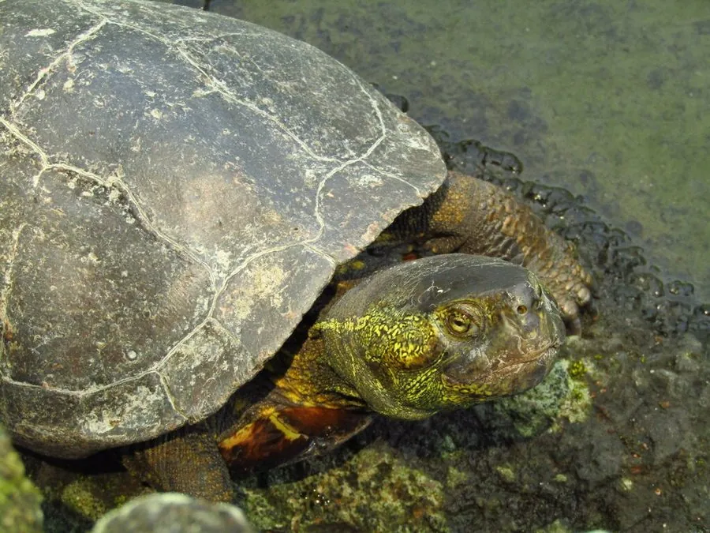

爬行动物 · 动物界
中华草龟 Mauremys reevesii

中国最常见的本土龟类之一，背甲上有三条明显的纵棱，性情温和，雄龟成年后会变黑，是民间熟悉的观赏龟。
- 分类
- 门脊索动物门纲爬行纲目龟鳖目科地龟科属石龟属
- 栖息环境
- 河流、湖泊、池塘、稻田、沟渠等缓流水体与湿地
- 地理分布
- 中国东部、南部及中部大部分地区，朝鲜、日本亦有分布
- 保护级别
- IUCN 濒危（EN）；中国国家二级保护动物
物种志
中华草龟背甲长 15–25 厘米，呈椭圆形，背甲有三条明显的纵棱，中央一条最为突出；体色多为深褐或黑褐，背甲与皮肤上常散布黄色斑纹，雄龟成年后身体逐渐变黑，被称为“墨龟”；头部较小，吻端略尖，四肢有蹼爪，尾巴较短。
它是中国分布最广的龟类之一，栖息于河流、湖泊、池塘、稻田与沟渠，白天在水中觅食，也常爬到岸边晒太阳；杂食性，取食小鱼、虾、螺、昆虫和水草。每年 4–6 月交配，雌龟在岸边沙土中掘洞产卵 4–20 枚，孵化期约 50–80 天，巢温决定幼龟性别。由于过度捕捉、栖息地消失和外来龟类竞争，其野生种群数量明显下降，被列为濒危物种；中国已将其列为国家二级保护动物，并开展人工繁殖与增殖放流。
形态与习性
- 食性杂食，小鱼、虾、螺、昆虫和水草
- 体长背甲长 15–25 cm
- 体重约 0.3–0.8 kg
- 寿命约 20–40 年
- 繁殖卵生，每窝 4–20 枚，孵化期 50–80 天
- 活动节律昼行性，喜爬到岸边晒太阳
- 别名由来雄龟成年后全身变黑，民间称为“墨龟”
趣味知识
- 中华草龟雄龟成年后皮肤和甲壳会逐渐变黑，民间称为“墨龟”。
- 它的背甲有三条纵棱，是区分于其他本土龟类的重要特征。
- 它的性别由孵化温度决定，温度偏高时孵出的雌龟更多。